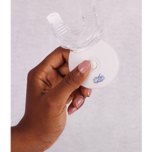
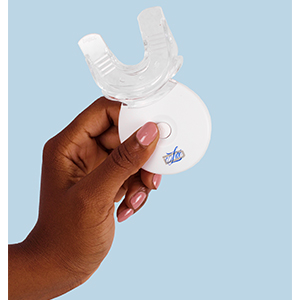
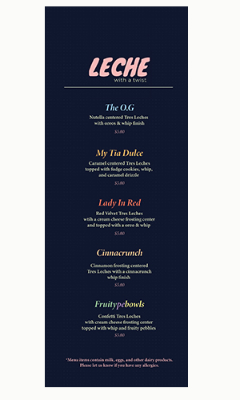

Resume
Danielle Cuestas
Student in Information Science

The work displayed below are some examples of things I have created for either my past work experiences as well as freelancing projects.
Photo Editing
Below is a before and after from a photo I was given to color correct for the product page of Delite Whitening.
Beside it is the photo I edited using Adobe Photoshop.
| Before | After |
|---|---|
|  |  |
Below are some logo examples I created for someone's company.

Below is a menu I created as a commission for someone's Tres Leches business.
